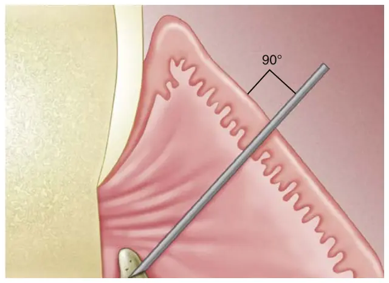

نسخه استخراجشده؛ ترجمه یا تأیید علمی انجام نشده است. وضعیت: captured
قرار است روی ناحیهی پرمولر و مولر پایین یک فلپ پریودنتال کوچک بزنی. سالکوس ملتهب است و پاکتها عمیقاند. هم بیحسی میخواهی، هم خونریزی کم، و بیمار نمیخواهد تا عصر زبانش بیحس باشد. PDL گزینهی خوبی است؟
تزریق اینتراسپتال (crestal anesthesia) خویشاوند PDL است، با یک تفاوت مهم: سوزن از وسط پاپیل بیندندانی مستقیم وارد استخوان سپتوم میشود، نه از سالکوس. پس وقتی سالکوس عفونی یا ملتهب است، این تزریق جایگزین مناسبی است. دارو مثل PDL از استخوان مغزی پخش میشود.
در مقایسه با IANB برای ترمیم کلاس ۱ خلفی پایین، اینتراسپتال حدود ۰٫۴ میلیلیتر دارو خواست در برابر حدود ۲ میلیلیتر، درد تزریق کمتری داشت و موفقیتش بیشتر بود (۹۶ تا ۱۰۰٪ در برابر ۸۲ تا ۹۳٪). اما بیحسی پالپ کوتاهتر بود: حدود ۲۳ دقیقه در برابر ۳۲ دقیقه. در بیمار جوان، به دلیل تراکم کمتر استخوان، موفقتر است.
مقاومت زیاد و ایسکمی بافت کنار سوزن یعنی جای سوزن درست است. اگر تزریق راحت و بیمقاومت پیش رفت، نوک سوزن احتمالاً در بافت نرم است نه استخوان. اگر محلول به دهان برگشت، سوزن را کمی عمیقتر ببر و دوباره ۰٫۴ میلیلیتر بده.

نکتهی طلایی: درد پس از تزریق اینتراسپتال کم است، چون محل تزریق خودش جزو میدان جراحی است. حدود نیمی از بیماران تا یک روز حساسیت خفیف لثه دارند. در جراحی طولانی، تزریق را در صورت نیاز تکرار کن.